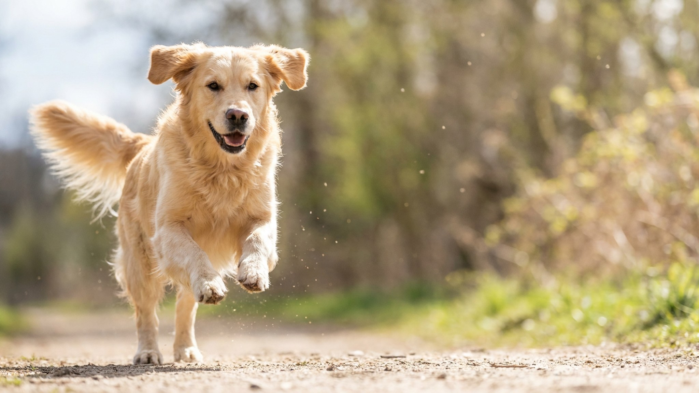

Собака села по команде — вы полезли за лакомством, нашли, достали, протянули. Прошло 4 секунды. За это время питомец уже встал, понюхал пол и облизнулся. Кого именно вы только что наградили? Точно не то поведение, которого хотели. Мозг животного связывает награду с тем, что происходило в момент её получения — и у вас есть ровно 1 секунда, чтобы попасть в это окно.
🐾 Здоровье питомца под контролем
AI-ветеринар, дневник здоровья и персональные советы для вашего питомца — установите AnimaLife бесплатно.
Кошки и собаки обучаются через ассоциацию: действие → сигнал → следствие. Нервная система животного «записывает» причинно-следственную цепочку только если промежуток между действием и следствием минимален. Исследования в области поведенческой психологии животных показывают, что оптимальное окно подкрепления — до 1 секунды после нужного действия. При задержке в 2–3 секунды животное уже связывает награду с другим поведением.
Это работает одинаково для кошек и для собак, хотя кошки чуть менее мотивированы на обучение из-за более высокой независимости. Принцип тот же.
Профессиональные тренеры решили проблему таймінга с помощью маркера — чёткого сигнала, который «фотографирует» нужный момент.
Большинство проблем в домашнем обучении — не упрямство питомца, а сдвинутый тайминг.
Еда — самый быстрый и чёткий маркер для большинства животных, но не единственный вариант.
Тайминг важнее частоты. Одна точная похвала в нужный момент обучает быстрее, чем десять запоздалых. Начните замечать свои задержки — и обучение пойдёт заметно лучше уже в первую неделю.
🐾 Первая помощь — всегда под рукой
AnimaLife подскажет, что делать в тревожной ситуации с питомцем ещё до визита к врачу. Откройте в один тап.
🐾 Понравился разбор?
Подпишитесь на канал — каждый день разбираем по одному тревожному симптому у кошек и собак: что в пределах нормы, а когда пора к врачу. Подпишитесь, чтобы не пропустить разбор, который может спасти здоровье вашего питомца.
Материал носит информационный характер и не заменяет очную консультацию ветеринара.